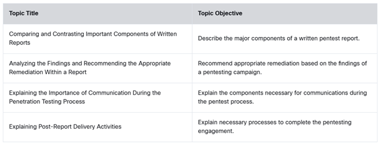
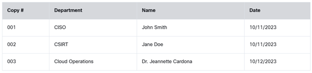

Reporting and Communication
9.0 Introduction
9.0.1 Why Should I Take This Module?
The testing is complete, and the results recorded. It is time to consult your notes and inform the customer of the results. It is important to understand that all the activities during the test lead to the report. Every result should be recorded along with the way the results were obtained. Note keeping and other types of pentesting documentation management are essential to having the data that we need to report on all the hard work we have done to the customer.
It is easy to get so into what you are doing that you forget to take notes or record results. I have done it myself. Then, when it is time to write the report, it can be very, very difficult to remember everything that we did and everything that we discovered. Not good.
There are new cloud-based tools that treat pentesting as a project. This means that project management tools have been integrated with pentesting tools. These tools provide a collaborative workspace, dashboarding, daily vulnerability tracking, and an integrated workspace in which all notes and testing logs are saved in one place. The software even generates reports from the compiled data.
Our report is our deliverable for what can be an expensive engagement with our client. We take pride in the quality of reports. The best way to get return business and to generate customer referrals is by delivering the most thorough and useful reports that we can.

Once you've successfully completed the testing phases of a penetration test, you still have the most important phase to look forward to. Whether you are performing a test for an internal team or you are a contracted penetration tester, providing a quality deliverable is very important. The deliverable for a penetration test is the final report. By providing a quality report, you enable your customer to act on the findings of the report and mitigate the issues found. This module starts by discussing post-engagement activities, such as cleanup of any tools or shells left on systems that were part of the test. This module also covers report writing best practices, including the common report elements as well as findings and recommendations. Finally, this module touches on report handling and communication best practices.
9.0.2 What Will I Learn in This Module?
Module Title: Reporting and Communication
Module Objective: Create a penetration testing report.

9.1 Components of Written Reports
9.1.1 Overview
Reports are a kind of communication. Many of the things that we do when we talk to other people are relevant to writing a report. We make many decisions when we speak to other people. These decisions enable us to choose the words and ideas we use according to who we are speaking to. For example, when we are talking about something that we think the person doesn't know much about, we simplify our language and provide explanations to help them to understand. If we need to ask a question of someone who is working in a busy place, we quickly ask our question and move on after it is answered. We don't try to engage in a conversation. And if we are talking to someone who we greatly respect, we speak more formally, avoid slang, and use words that communicate politeness.
Writing a report is similar. We need to provide information for busy people, details for technical people, and use language that expresses respect for our customer. We should never be critical or talk down to our audience.
Writing a good report takes practice and thought. It is an art. Read ahead to learn some of the considerations that must be made when we create this product for our audience.

One of the most important aspects to keep in mind when writing a report is who your report audience is. If you write a report that only a highly technical audience (technical staff) can understand and deliver it to an audience that is not very technical, the report will not show its value, and your hard work will go unnoticed. A clearly written executive summary is important because it breaks down the technical findings into summary explanations and provides enough information that all technical levels can understand the results and see value in the deliverable. Of course, you still need to cover all the technical details in other sections of the report. You can see that it is important to consider not only who you are delivering the report to but also who they will be passing it along to. You may end up presenting your final report to the executive or senior management level (the C-suite). Typically, they will turn over the findings of the report to other teams, such as IT, information security, developers, or even third-party stakeholders to address the issues found. The technical sections of the report must provide enough information for those teams to be able to take action.
C-suite refers to upper or executive-level managers within a company. Common C-suite executives include the chief executive officer (CEO), chief financial officer (CFO), chief operating officer (COO), chief information officer (CIO), and chief security officer (CSO).
A pen tester typically uses various tools throughout the testing phases of a penetration test, and some of these tools have the capability to produce impressive reports in various formats. This is a good feature for a tool to have. However, just because a tool has this capability does not mean you should use it to export the findings and simply regurgitate those findings in your final report. There are almost always false positives or false negatives in the results of any tool. For this reason, you must carefully review the results of a tool's output and try to determine what the actual vulnerabilities mean to the target. You must take into consideration the business of the target to be able to determine the impact on the environment. From there you will be able to compile a plan for how the findings should be prioritized and addressed.
9.1.2 Report Contents
There are many ways you can go about structuring the elements in a report. Most penetration testing consultants start with a template and customize it based on the type of test and the desired deliverable. Keep in mind that there are published standards that you can reference. This section takes a look at some examples of the elements that should be included in a penetration testing report and discusses the level of detail that should be provided for each of these elements.
Take some time to look at the excellent examples of penetration testing reports available at https://github.com/The-Art-of-Hacking/art-of-hacking/tree/master/pen_testing_reports. These reports have been provided by various organizations for the purpose of sharing examples of penetration testing reports. A great way to use this resource is to browse through the sample reports and view the report formats. Take a look at how the reports are organized, including what is included in each of the sections. You can then build your own report format based on these examples and your specific needs.

A penetration testing report typically contains the following sections (which are not listed in a particular order). Select each for more detail.
Executive Summary
A brief high-level summary describes the penetration test scope and major findings.
Scope Details
It is important to include a detailed definition of the scope of the network and systems tested as part of the engagement to distinguish between in-scope and out-of-scope systems or segments and identify critical systems that are in or out of scope and explain why they are included in the test as targets.
Methodology
A report should provide details on the methodologies used to complete the testing (for example, port scanning, Nmap). You should also include details about the attack narrative. For example, if the environment did not have active services, explain what testing was performed to verify restricted access. Document any issues encountered during testing (for example, interference encountered as a result of active protection systems blocking traffic).
Findings
A report should document technical details about whether or how the system under testing and related components may be exploited based on each vulnerability found. It is a good idea to use an industry-accepted risk ratings for each vulnerability, such as the Common Vulnerability Scoring System (CVSS). When it comes to reporting, it can be difficult to determine a relevant method of calculating metrics and measures of the findings uncovered in the testing phases. This information is very important in your presentation to management. You must be able to provide data to show the value in your effort. This is why you should always try to use an industry-standard method for calculating and documenting the risks of the vulnerabilities listed in your report. CVSS has been adopted by many tools, vendors, and organizations. Using an industry standard such as CVSS will increase the value of your report to your client. CVSS, which was developed and is maintained by FIRST.org, provides a method for calculating a score for the seriousness of a threat. The scores are rated from 0 to 10, with 10 being the most severe. CVSS uses three metric groups in determining scores.
Remediation
You should provide clear guidance on how to mitigate and remediate each vulnerability. This information will be very useful for the IT technical staff, software developers, and security analysts who are trying to protect the organization (often referred to as the "blue team").
Conclusion
The report must have a good summary of all the findings and recommendations.
Appendix
It is important to document any references and include a glossary of terms that the audience of the report may not be familiar with.
Vulnerability scanners rely heavily on catalogs of known vulnerabilities. The two catalogs of known vulnerabilities you need to be familiar with as a security analyst are Common Vulnerabilities and Exposures (CVE), which is a list of publicly known vulnerabilities, each assigned an ID number, description, and reference, and Common Vulnerability Scoring System (CVSS), which provides a score from 0 to 10 that indicates the severity of a vulnerability.
The following list gives you an idea of what is included in the metrics groups used to determine the overall CVSS score of a vulnerability. Select each for more information.
Base metric group
Includes exploitability metrics (for example, attack vector, attack complexity, privileges required, user interaction) and impact metrics (for example, confidentiality impact, integrity impact, availability impact).
Temporal metric group
Includes exploit code maturity, remediation level, and report confidence.
Environmental metric group
Includes modified base metrics, confidentiality, integrity, and availability requirements. CVSS includes different metrics and measures that describe the impact of each vulnerability. This risk prioritization can help your customer understand the business impact (business impact analysis) of the vulnerabilities that you found during the penetration testing engagement. You can find full explanations of the CVSS metric groups as well as details on how to calculate scores by accessing the Common Vulnerability Scoring System User Guide at https://www.first.org/cvss/user-guide.
The Open Web Application Security Project (OWASP) publishes the Risk Rating Methodology to help with estimating the risk of a vulnerability as it pertains to a business. It is part of the OWASP Testing Guide, at https://owasp.org/www-project-web-security-testing-guide.
9.1.3 Practice — Penetration Reporting
You are working on your penetration test report. Your supervisor reads over the report and suggests that many of the vulnerabilities that you have found should be reported with their CVSS scores. What is the value of CVSS scores in a penetration test report?
The CVSS provides vulnerability ratings that are standard across all industries. Which CVSS metric group provides vulnerability ratings that are tailored to a specific organization's threat surface?
9.1.4 Storage Time for Report and Secure Distribution
The classification of a report's contents is driven by the organization that the penetration test has been performed on and its policies on classification. In some cases, the contents of a report are considered top secret. However, as a rule of thumb, you should always consider report contents as highly classified and distribute them on a need-to-know basis only. The classification of report contents also determines the method of delivery.
In general, there are two ways to distribute a report: as a hard copy or electronically. Many times, when you perform the readout of the findings from your report, you will be meeting with the stakeholders who requested the penetration test to be performed. This meeting will likely include various people from the organization, including IT, information security, and management. In most cases, they will want to have a hard copy in front of them as you walk through the readout of the findings. This is, of course, possible, but the process should be handled with care.
The following are some examples of how to control the distribution of reports:
- Produce only a limited number of copies.
- Define the distribution list in the scope of work.
- Label each copy with a specific ID or number that is tied to the person it is distributed to.
- Label each copy with the name of the person it is distributed to.
- Keep a log of each hard copy, including who it was distributed to and the date it was distributed. Table 9-2 shows an example of such a log.
- Ensure that each copy is physically and formally delivered to the designated recipient.
- If transferring a report over a network, ensure that the document is encrypted and the method of transport is encrypted.
- Ensure that the handling and distribution of an electronic copy of a report are even more restrictive than for a hard copy:
- Control distribution on a secure server that is owned by the department that initially requested the penetration test.
- Provide only one copy directly to the client or requesting party.
- Once the report is delivered to the requesting party, use a documented, secure method of deleting all collected information and any copy of the report from your machine.

9.1.5 Practice — Control and Distribution of Reports
You are preparing the Pixel Paradise pentest report for distribution. Your project manager has given you a brief distribution list for the report with the names of the personnel at Pixel Paradise who should receive it. Your manager tells you to make one copy for each person on the list and to carefully destroy any extra copies. Why is the manager so concerned about the number of reports that are produced and the destruction of any extra copies?
9.1.6 Note Taking
This is a common question when it comes to data collection and report writing: Exactly when should I start putting together this information? A report is the final outcome of a penetration testing effort. The most accurate and comprehensive way to compile a report is to start collecting and organizing the results while you are still testing. In other words, you need to understand the process of ongoing documentation during testing. As you come across findings that need to be documented, take screenshots of the tools used, the steps, and the output. This will help you piece together exactly the scenario that triggered the finding and illustrate it for the end user. You should include these screenshots as part of the report because including visual proof is the best way for your audience to gain a full picture of and understand the findings. Sometimes it may even be necessary to create a video. In summary, taking screenshots, videos, and lots of notes will help you create a deliverable report.
When it comes to constructing a final penetration testing report, one of the biggest challenges is pulling together all the data and findings collected throughout the testing phases. This is especially true when the penetration test spans a long period of time. Longer test spans often require a lengthier sorting process and use of specialized tools, such as Dradis, to find the information you are looking to include in your report.
Dradis is a handy little tool that can ingest the results from many of the penetration testing tools you use and help you produce reports in formats such as CSV, HTML, and PDF. It is very flexible because it includes add-ons and allows you to create your own. If you find yourself in a situation where you need to import from a new tool that is not yet compatible, you can write your own add-on to accomplish this.
There are two editions of the Dradis Framework. The Community Edition (CE) is an open-source version that is freely available under the GPLv2 license. The Professional Edition (PE) is a commercial product that includes additional features for managing projects as well as more powerful reporting capabilities. The Community Edition can be found at https://github.com/dradis/dradis-ce. Information on the Professional Edition is available at https://dradisframework.com.
9.1.7 Common Themes/Root Causes
As you compile findings during your testing phases, you will be recording the output of tools that you run, all vulnerabilities found, and general observations of insecure systems resulting from failure to use best practices. By itself, such data is normally not very useful in understanding the impact or risk to the specific environment being tested.
Let's say you run an automated vulnerability scanner such as Nessus against a Linux server that you found accessible on the internal network. The vulnerability scanner might indicate that it has an FTP server running on port 21. The FTP server software that is running the target host is up to date, and there is no indication from the vulnerability scanner that this is an issue. However, as you continue to discover additional information about the environment you are testing, you determine that this Linux server is actually accessible from the Internet.
You then discover, based on conversations with the server owner, that this FTP server was supposed to be decommissioned many years ago. After looking at the logs of the FTP server, you find that employees are still using it to store and transfer sensitive information. This, of course, is a major concern that would not have been uncovered by just reading a vulnerability report. This specific example illustrates why it is so important to analyze the results of your testing and correlate them to the actual environment. It is the only way to really understand the risk, and this understanding should be carefully conveyed in your report. Most reports provide an indication of risk on a scale of high, medium, and low. A quality report provides an accurate rating based on the risk to the actual environment and a detailed root cause analysis for each vulnerability.
If you are a third-party penetration tester who has been hired to perform a test for a customer, the report is your final deliverable. It is also proof of the work you performed and the findings that came from the effort. It is similar to having a home inspection on a home you want to purchase: The inspector will likely spend hours around the house, checking in the attic, crawl space, and so on. At the end of the day, you will want to have a detailed report on the inspector's findings so that you can address any issues found. If the inspector were to provide you with an incomplete report or a report containing false findings, you would not feel that you had gotten your money's worth. You would also run into issues if you tried to address the issues with the seller of the house. Similarly, when you turn over a penetration testing report to a customer, the customer will begin addressing the findings in the report. The customer may begin deploying upgrades or purchasing new equipment based on your recommendations. If the customer finds that one of the reported findings was a false positive, this may cost the customer a lot of money and time, and the customer would likely not hire you back for a follow-up engagement – and that isn't necessarily a good thing.
Now consider the case of an internal penetration test. Let's say you are performing an application audit on an internally developed web application. You note in your report that there is an SQL injection flaw in one of the input fields of the application, but you do not validate the finding. Typically, you would turn over this report to management, who would then task the application developer with addressing the issue. Of course, the application developer would want to find a fix for this defect as soon as possible. He or she would likely commit time to researching and mitigating the issue. If after spending time and money on hunting down the cause of this flaw, it is determined to be a false positive, the application developer would come back to you as the tester for answers. If it turned out that you didn't validate the result, the application developer would not be happy – and you could be sure your management would hear about it.
Of course, these are just two scenarios that illustrate the importance of quality report writing. There can be other impacts as well, including compromised systems due to false negatives. However, we now move on to discussing what a quality report is and how to accomplish it.
9.1.8 Practice — Common Themes/Root Causes
In the Pixel Paradise engagement, you have found an undocumented server that is reachable from the internet. What's more, it appears that the enterprise firewall was altered to permit access to the server from outside. In order to determine the root cause of these vulnerabilities, and recommend mitigation, what should you do?
9.1.9 Lab — Explore PenTest Reports
Writing good pentest report is a complex task. Organizations frequently have their own report templates and archived copies of previously created reports. It is always a good idea to consult examples when you have doubts about the language, tone, and style that you should use when writing a final report.
If you are uncertain about what you are doing, ask for help! There is nothing wrong with seeking assistance, especially with something that you have little experience doing. In the long run, this will save time on review and edit cycles by creating a stronger first draft.
In this lab, you will practice some of the skills necessary for creating pentest reports.
In this lab, you will complete the following objectives:
- Part 1: Review Publicly Available Penetration Testing Reports
- Part 2: Develop Your Own Report Format
- Part 3: Create your Pentesting Report
In this lab, you will review publicly available penetration testing reports, develop your own report format, and create your own pentesting report.
Open Lab →Please answer the following questions after you have completed the lab.
How can you improve the Protego sample pentest report for Pixel Paradise that is provided in the lab?
9.2 Analyzing the Findings and Recommending the Appropriate Remediation Within a Report
9.2.1 Overview
Most penetration tests require recommendations for remediation. It is not enough to just find issues. We also need to provide our expertise to help our clients address the issues that we find.
Our recommendations may be technical, but can also be organizational. Many issues can be addressed through changes in policies and procedures. Sometimes our clients need to staff new positions or enhance the skill sets of existing employees. For other issues, staff training can be an appropriate recommendation in order to enhance protections against social engineering attacks.
You should match each vulnerability that you find to recommendations for mitigation. It is also valuable to provide relative risk ratings to help the client prioritize the actions that they must take. At this point in the engagement, we consider ourselves to be in a helping relationship with our clients.
During a penetration testing engagement, you should analyze the findings and recommend the appropriate remediation within your report, including technical, administrative, operational, and physical controls.
9.2.2 Technical Controls
Technical controls make use of technology to reduce vulnerabilities. The following are examples of technical controls that can be recommended as mitigations and remediation of the vulnerabilities found during a pen test. Select each technical control for more information.
System hardening
System hardening involves applying security best practices, patches, and other configurations to remediate or mitigate the vulnerabilities found in systems and applications. The system hardening process includes closing unnecessary open ports and services, removing unnecessary software, and disabling unused ports.
User input sanitization and query parameterization
In Module 6, "Exploiting Application-Based Vulnerabilities," you learned that SQL injection is best prevented through the use of parameterized queries. You also learned about several other input validation vulnerabilities. The use of input validation (sanitizing user input) best practices is recommended to mitigate and prevent vulnerabilities such as cross-site scripting, cross-site request forgery, SQL injection, command injection, XML external entities, and other vulnerabilities explained in Module 6. OWASP provides several cheat sheets and detailed guidance on how to prevent these vulnerabilities; see https://cheatsheetseries.owasp.org/cheatsheets/Input_Validation_Cheat_Sheet.html and https://cheatsheetseries.owasp.org/cheatsheets/Query_Parameterization_Cheat_Sheet.html.
Multifactor authentication
Multifactor authentication (MFA) is authentication that requires two or more factors. Multilayer authentication requires that two or more of the same type of factors be presented. Data classification, regulatory requirements, the impact of unauthorized access, and the likelihood of a threat being exercised should all be considered when you're deciding on the level of authentication required. The more factors, the more robust the authentication process. In response to password insecurity, many organizations have deployed multifactor authentication options to their users. With multifactor authentication, accounts are protected by something you know (password) and something you have (one-time verification code provided to you). Even gamers have been protecting their accounts using MFA for years.
Let's take a look at this in practice: Jeannette inserts her bank card into an ATM and enters her PIN. What examples of multifactor authentication has she exhibited? An ATM provides a good example of MFA because it requires both "something you have" (your ATM card) and "something you know" (your PIN). Another possible factor in MFA is "something you are," which can be based on biometrics such as fingerprints, retinal patterns, and hand geometry. Yet another factor is "somewhere you are," such as authenticating to a specific network in a specific geographic area or boundary using geofencing or GPS.
Password encryption
You should always encrypt passwords, tokens, API credentials, and similar authentication data.
Process-level remediation
It is important to protect operating system (for example, Linux, Windows, iOS, Android) processes and make sure an attacker has not created or manipulated any processes in the underlying system.
Patch management
Patch management is the process of distributing, installing, and applying software updates. A patch management policy lists guidelines for proper management of vulnerabilities and includes phases such as testing, deploying, and documenting the security patches applied to your organization.
Key rotation
It is important to have and use a process for retiring an encryption key and replacing it by generating a new cryptographic key. Rotating keys at regular intervals allows you to reduce the attack surface and meet industry standards and compliance.
Certificate management
It is important to enroll, generate, manage, and revoke digital certificates in a secure manner.
Secrets management solution
You can take advantage of a number of tools and techniques to manage authentication credentials (secrets). These secrets include passwords, API keys, and tokens used in applications, services, and specialized systems. Employing a good secrets management solution enables you to eliminate hard-coded credentials, enforce password best practices (or eliminate passwords with other types of authentication), perform credential use monitoring, and extend secrets management to third parties in a secure manner. Examples of secrets management solutions offered by cloud providers include AWS Secrets Manager (https://aws.amazon.com/secrets-manager) and Google Cloud Secret Manager (https://cloud.google.com/secret-manager).
Network segmentation
Segmenting a network may involve using a combination of technologies such as firewalls, VLANs, access control lists in routers, and other techniques. For decades, servers were assigned subnets and VLANs. Sounds pretty simple, right? Well, it introduced a lot of complexities because application segmentation and policies were physically restricted to the boundaries of the VLAN within the same data center (or even in the campus). In virtual environments, the problem became bigger. Today applications can move around between servers to balance loads for performance or high availability upon failures. They can also move between different data centers and even different cloud environments.
Traditional segmentation based on VLANs constrains you to maintain policies related to which application needs to talk to which application (and who can access such applications) in centralized firewalls. This is ineffective because most traffic in data centers is now "east-west" traffic, and a lot of that traffic does not even hit the traditional firewall. In virtual environments, a lot of the traffic does not leave the physical server. You need to apply policies to restrict whether application A needs or does not need to talk to application B or which application should be able to talk to the database. These policies should not be bound by which VLAN or IP subnet the application belongs to and whether it is in the same rack or even in the same data center.
Network traffic should not make multiple trips back and forth between the applications and centralized firewalls to enforce policies between VMs. The ability to enforce network segmentation in those environments is called microsegmentation, and microsegmentation is at the VM level or between containers, regardless of a VLAN or a subnet. Microsegmentation solutions need to be application aware. This means that the segmentation process starts and ends with the application itself. Most microsegmentation environments apply a zero-trust model, which dictates that users cannot talk to applications and applications cannot talk to other applications unless a defined set of policies permits them to do so.
9.2.3 Administrative Controls
Administrative controls are policies, rules, or training that are designed and implemented to reduce risk and improve safety. The following are examples of administrative controls that may be recommended in your penetration testing report. Select each administrative control for more information.
Role-based access control (RBAC)
This type of control bases access permissions on the specific role or function. Administrators grant access rights and permissions to roles. Each user is then associated with a role. There is no provision for assigning rights to a user or group account. For example, say that you have two users: Hannah and Derek. Derek is associated with the role of Engineer and inherits all the permissions assigned to the Engineer role. Derek cannot be assigned any additional permissions. Hannah is associated with the role "Sales" and inherits all the permissions assigned to the Sales role and cannot access Engineer resources. Users can belong to multiple groups. RBAC enables you to control what users can do at both broad and granular levels.
Secure software development life cycle
The software development life cycle (SDLC) provides a structured and standardized process for all phases of any system development effort. The act of incorporating security best practices, policies, and technologies to find and remediate vulnerabilities during the SDLC is referred to as the secure software development life cycle (SSDLC). OWASP provides several best practices and guidance on implementing the SSDLC at https://owasp.org/www-project-integration-standards/writeups/owasp_in_sdlc. In addition, the OWASP Software Assurance Maturity Model (SAMM) provides an effective and measurable way for all types of organizations to analyze and improve their software security posture. You can find more details about OWASP's SAMM at https://owaspsamm.org.
Minimum password requirements
Different organizations may have different password complexity requirements (for example, minimum length, the use of uppercase letters, lowercase letters, numeric, and special characters). At the end of the day, the best solution is to use multifactor authentication (as discussed earlier in this module) instead of just simple password authentication.
Policies and procedures
A cybersecurity policy is a directive that defines how the organization protects its information assets and information systems, ensures compliance with legal and regulatory requirements, and maintains an environment that supports the guiding principles. The objective of a cybersecurity policy and corresponding program is to protect the organization, its employees, its customers, and its vendors and partners from harm resulting from intentional or accidental damage, misuse, or disclosure of information, as well as to protect the integrity of the information and ensure the availability of information systems. Successful policies establish what must be done and why it must be done–but not how to do it. A good policy must be endorsed, relevant, realistic, attainable, adaptable, enforceable, and inclusive.
9.2.4 Operational Controls
Operational controls focus on day-to-day operations and strategies. They are implemented by people instead of machines and ensure that management policies are followed during intermediate-level operations. The following are examples of operational controls that often allow organizations to improve their security operations. Select each operation control for more information.
Job rotation
Allowing employees to rotate from one team to another or from one role to a different one allows individuals to learn new skills and get more exposure to other security technologies and practices.
Time-of-day restrictions
You might want to restrict access to users based on the time of the day. For example, you may only allow certain users to access specific systems during working hours.
Mandatory vacations
Depending on your local labor laws, you may be able to mandate that your employees take vacations during specific times (for example, mandatory holiday shutdown periods).
User training
All employees, contractors, interns, and designated third parties must receive security training appropriate to their position throughout their tenure. The training must cover at least compliance requirements, company policies, and handling of standards. A user should have training and provide written acknowledgment of rights and responsibilities prior to being granted access to information and information systems. Organizations will reap significant benefits from training users throughout their tenure.
Security awareness programs, security training, and security education all serve to reinforce the message that security is important. Security awareness programs are designed to remind users of appropriate behaviors. Security education and training teach specific skills and are the basis for decision-making. The National Institute of Standards and Technology (NIST) published Special Publication 800-50, "Building an Information Technology Security Awareness and Training Program," which succinctly defines why security education and training are so important.
9.2.5 Physical Controls
Physical controls use security measures to prevent or deter unauthorized access to sensitive locations or material. The following are examples of physical controls that can be recommended in your penetration testing report. Select each physical control for more information.
Access control vestibule
An access control vestibule (formerly known as a mantrap) is a space with typically two sets of interlocking doors, where one door must close before the second door opens.
Biometric controls
These controls include fingerprint scanning, retinal scanning, and face recognition, among others.
Video surveillance
Cameras may be used to record and monitor activities in the physical premises.
9.2.6 Practice — Recommended Controls
You are working on the recommendations sections of the Pixel Paradise report and considering the categories of security controls that should be recommended as mitigation. Which categories of controls should you consider? (Choose four.)
9.2.7 Lab — Recommend Remediation Based on Findings
As you know, some vulnerability scanners provide links to reference materials and CVSS ratings. Some even allow filtering of results based on CVSS ratings so that only vulnerabilities that exceed a stated severity threshold will be displayed.
It is important to provide vulnerability ratings to your customers in some form. You should try to be as objective as possible. Using a standard rating system such as CVSS helps with this, but sometimes the vulnerability values lack context. Some pentesting organizations use their own rating system that they can contextualize for the client depending on the nature of the business. However, if you do this, be sure to define the ratings and provide a rationale for the rating of individual vulnerabilities if greater clarity is required.
In this lab, you will complete the following objectives:
- Identify and prioritize vulnerabilities found on the DVWA server.
- Research and recommend mitigation strategies.
In this lab, you will identify and prioritize vulnerabilities found on the DVWA server and research and recommend mitigation strategies.
Open Lab →Please answer the following questions after you have completed the lab.
A vulnerability scan of the Pixel Paradise network discovered a Missing "HTTPOnly" Cookie Attribute (HTTP) vulnerability. What should you recommend be done to mitigate this vulnerability?
9.3 Explaining the Importance of Communication During the Penetration Testing Process
9.3.1 Overview
No one works in a vacuum. Here at Protego, we are always aware that we are providing a service to our customers. Without them, we don't exist. What's more, because many of us have worked in various cybersecurity-related positions within other companies, we understand the challenges that organizations face as they work to defend themselves against what seems like an endless number of threats and threat actors.
We always want to keep in touch with our clients as we conduct our testing engagements. Some security personnel will likely be anxious that they could be accused of professional negligence because of the vulnerabilities that we find. Management is concerned about the time it takes to conduct a test and any costs that could occur if the vulnerabilities that we discover could require expensive software upgrades or system down time.
We think it is effective to schedule regular check-in meetings with our customers so that they know how the test is going. We also work to open less formal channels of communication with cybersecurity personnel in order to help them feel more comfortable with what we are doing and to find answers to questions that might come up during the test.
In a formal sense, our penetration testing agreements establish how we intend to communicate during the test, and with whom. We also establish who on the client team should be informed if we discover indicators of prior compromise. Finally, we list the stakeholders at the organization who should receive the final report and attend the closing presentation.
The report is the final deliverable in a penetration test. It communicates all the activities performed during the test as well as the ultimate results in the form of findings and recommendations. The report is, however, not the only form of communication that you will have with a client during a penetration testing engagement. During the testing phases of the engagement, certain situations may arise in which you need to have a plan for communication and escalation.
In Module 2, "Planning and Scoping a Penetration Testing Assessment", you learned how to scope a penetration testing engagement properly. You may encounter a scope creep situation if there is poor change management in the penetration testing engagement. In addition, scope creep can surface through ineffective identification of the technical and nontechnical elements that will be required for the penetration test. Poor communication among stakeholders, including your client and your own team, can also contribute to scope creep.
It is extremely important that you understand the communication path and communication channels with your client. You should always have good open lines of communication with your client and the stakeholders that hired you, including the following:
- Primary contact: This is the stakeholder who hired you or the main contact identified by the person who hired you.
- Technical contacts: You should document any IT staff or security analysts/engineers that you might need to contact for assistance during the testing.
- Emergency contacts: You should clearly document who should be contacted in case of an emergency.
9.3.2 Communication Triggers
It is important that you have situational awareness to properly communicate any significant findings to your client. The following are a few examples of communication triggers:
- Critical findings: You should document (as early as in the pre-engagement phase) how critical findings should be communicated and when. Your client might require you to report any critical findings at the time of discovery instead of waiting to inform the client in your final report.
- Status reports: Your client may ask you to provide periodic status reports about how the testing is progressing.
- Indicators of prior compromise: During a penetration test, you may find that a real (malicious) attacker has likely already compromised the system. You should immediately communicate any indicators of prior compromise and not wait until you deliver the final report.
9.3.3 Practice — Communication Triggers
You have gained access to a server filesystem during the exploitation phase of the Pixel Paradise penetration test. You notice a file that appears out of place. You exfiltrate the file and submit it to a malware sandbox for analysis. The sandbox service recognizes the file as a component of a known backdoor exploit. What should you do with this information?
9.3.4 Reasons for Communication
You should know the proper ways to deescalate any situation you may encounter with a client. You should also try to deconflict any potentially redundant or irrelevant information from your report and communication with your client. Try to identify and avoid false positives in your report.
You should also report any criminal activity that you may have discovered. For example, you may find that one of the employees may be using corporate assets to attack another company, steal information, or perform some other illegal activity.
The term false positive is a broad term that describes a situation in which a security device triggers an alarm but there is no malicious activity or actual attack taking place. In other words, false positives are "false alarms"; they are also called "benign triggers". False positives are problematic because by triggering unjustified alerts, they diminish the value and urgency of real alerts. Having too many false positives to investigate becomes an operational nightmare and is likely to cause you to overlook real security events. There are also false negatives, which are malicious activities that are not detected by a network security device. A true positive is a successful identification of a security attack or a malicious event. A true negative occurs when an intrusion detection device identifies an activity as acceptable behavior, and the activity is actually acceptable.
9.3.5 Goal Reprioritization and Presentation of Findings
Depending on the vulnerabilities and weaknesses that you find during a penetration testing engagement, your client may tweak or reprioritize the goal of the testing. Your client may prioritize some systems or applications that may not have been seen as critical. Similarly, your client might ask you to deprioritize some activities in order to focus on some goals that may now present a higher risk.
The report is the final deliverable for a penetration test. It communicates all the activities performed during the test as well as the ultimate results in the form of findings and recommendations. The report is, however, not the only form of communication that you will have with a client during a penetration testing engagement. During the testing phases of the engagement, certain situations may arise in which you need to have a plan for communication and escalation.
The findings and recommendations section is the meat of a penetration testing report. The information provided here is what will be used to move forward with remediation and mitigation of the issues found in the environment being tested. Whereas earlier sections of the report, such as the executive summary, are purposely not too technical, the findings and recommendations section should provide all the technical details necessary that teams like IT, information security, and development need to use the report to address the issues found in the testing phase.
Remember that you must keep in mind your audience. For instance, if you are compiling a report for a web application penetration test, your ultimate audience for this section will likely be the development engineers who are responsible for creating and maintaining the application being tested. You will therefore want to provide a sufficient amount of information for them to be able to re-create the issue and identify exactly where the code changes need to be applied. Let's say that during your testing, you found an SQL injection flaw. In the report, you then need to provide the actual HTTP request and response you used to uncover that flaw. You also need to provide proof that the flaw is not a false positive. Ideally, if you are able to exploit the SQL injection flaw, you should provide a screenshot showing the results of your exploitation. If this is sensitive information from an exploited database, you should redact the screenshot in a manner that is sufficient to limit the sensitivity. Your report should provide screenshots of the various findings and detailed descriptions of how they were identified.
9.4 Explaining Post-Report Delivery Activities
9.4.1 Overview
Well, the Pixel Paradise test is almost over. They have accepted the final report and we delivered our presentation of findings to the stakeholders. They seem happy with the quality of the work we did, but not so happy about some of the findings. That's good, because it looks like they will accept our recommendations and make important improvements to their security posture.
The last thing that we need to do is restore their systems to the state that they were in before we started our tests. This is another reason why it is important to carefully document our procedures as we conduct the test. We need to be sure to restore their systems, remove any files or accounts that we created, and get rid of the testing software and simulated malware that we installed. In addition, we did exfiltrate one file. But that has already been destroyed. Once we have cleaned everything up, get ready for the next job. It will be a good one!
This section outlines several important activities that you must complete after delivering a penetration testing report to a client.
9.4.2 Post-Engagement Cleanup
Say that you have completed all the testing phases for a penetration test. What you do next is very important to the success of the engagement. Throughout your testing phases, you have likely used many different tools and techniques to gather information, discover vulnerabilities, and perhaps exploit the systems under test. These tools can and most likely will cause residual effects on the systems you have been testing.
Let's say, for instance, that you have completed a web application penetration test and used an automated web vulnerability scanner in your testing process. This type of tool is meant to discover issues such as input validation and SQL injection. To identify these types of flaws, the automated scanner needs to actually input information into the fields it is testing. The input can be fake data or even malicious scripts. As this information is being input, it will likely make its way into the database that is supporting the web application you are testing. When the testing is complete, that information needs to be cleaned from the database. The best option for this is usually to revert or restore the database to a previous state. This is why it is suggested to test against a staging environment when possible. This is just one example of a cleanup task that needs to be performed at the end of a penetration testing engagement.
Another common example of necessary cleanup is the result of any exploitation of client machines. Say that you are looking to gain shell access to a Windows system that you have found to be vulnerable to a buffer overflow vulnerability that leads to remote code execution. Of course, when you find that this machine is likely vulnerable, you are excited because you know that the Metasploit framework has a module that will allow you to easily exploit the vulnerability and give you a root shell on the system. You run the exploit, but you get an error message that it did not complete, and there may be cleanup necessary. Most of the time, the error message indicates which files you need to clean up. However, it may not, and if it doesn't, you need to take a look at the specific module code to determine what files you need to clean up. Many tools can leave behind residual files or data that you need to be sure to clean from the target systems after the testing phases of a penetration testing engagement are complete. It is also very important to have the client or system owner validate that your cleanup efforts are sufficient. This is not always easy to accomplish, but providing a comprehensive list of activities performed on any systems under test will help with this.
The following are some examples of the items you will want to be sure to clean from systems:
- Tester-created credentials: Remove any user accounts that you created to maintain persistent access or for any other post-exploitation activity.
- Shells: Remove shells spawned on exploited systems.
- Tools: Remove any tools installed or run from the systems under test.
9.4.3 Additional Post-Report Delivery Activities
The following are additional important post-report delivery activities that you as a pen tester must follow. Select each for more information.
Client acceptance
You should have written documentation of your client's acceptance of your report and related deliverables.
Lessons learned
It is important to analyze and present any lessons learned during the penetration testing engagement.
Follow-up actions/retest
Your client may ask you to retest different applications or systems after you provide the report. You should follow up and take care of any action items in an agreed appropriate time frame.
Attestation of findings
You should provide clear acknowledgement proving that the assessment was performed and reporting your findings.
Data destruction process
You need to destroy any client sensitive data as agreed in the pre-engagement activities.
9.4.4 Practice — Post Report Delivery
Our testing engagement with Pixel Paradise is coming to a close. They have signed-off on our final report and it is time to clean up. You are needed to help out. What activities will you be participating in? (Choose three.)